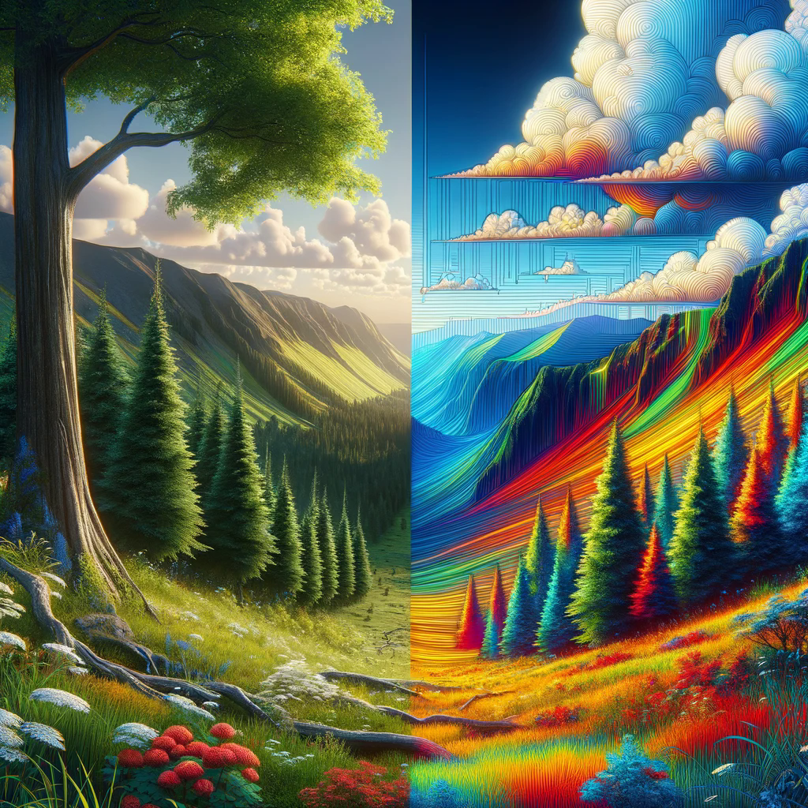

Senior ML/CV Research Engineer: graduated from the University of Soongsil’s Department of Computer Science and Engineering, specializing in
Artificial Intelligence, with a particular focus on industry‑grade AI solutions using Computer Vision, with over 5 years of extensive experience heavily
focused on deep learning. I have developed proficiency in ML/DL, leveraging frameworks like PyTorch, TensorFlow, and Scikit‑Learn in various
practical projects and research initiatives.
Insights into my activities

Image Processing
Image Processing — a task that involves manipulating or enhancing images to improve their
quality or to extract useful information. The output of image processing can vary widely
depending on the application, from enhanced images with adjusted brightness and contrast
to complex transformations like feature extraction and noise reduction. For example, an
image processing operation might enhance a night time photograph by increasing its
brightness and reducing its graininess, or it might isolate and enhance certain features
in a medical image for better diagnostic visibility. Techniques used in image processing
include filtering, edge detection, image sharpening, and color adjustment. This field is
fundamental in a variety of applications across industries, including medical imaging,
surveillance, photography, and even in the preprocessing steps for more complex computer
vision tasks like object detection and classification. As a rule, for image processing
used libraries like OpenCV, Pillow, NumPy, TorchVision, etc.
Image Classification
Image classification — a task that involves assigning a label to an entire image based on
its content. The output of an image classification model is typically a set of confidence
scores for each category considered. These scores quantify how likely it is that the image
belongs to each category. For example, an image might be 80% likely to be a photo of a bird,
15% a plane, and 5% something else. This quantification is crucial for applications where
precision is important, such as in legal or medical settings, where you need a reliable
assessment of what the image contains.
Object Detection
Object Detection — a task that involves detecting all instances of objects from known
categories within an image. The output of an object detection model includes not only
the class labels but also the precise locations and boundaries of these objects,
represented by bounding boxes. Each bounding box is accompanied by a confidence score that
indicates the likelihood of the object belonging to a specific class. For instance, within
a street scene, a detection model might identify a bounding box around a car with a 90%
confidence score, a pedestrian with an 85% confidence score, and a traffic light with a 95%
confidence score. This additional layer of spatial information makes object detection more
complex and informative than basic image classification, as it provides not only what
objects are present but also where they are located in the space of the image.
Segmentation
Segmentation — a task that involves dividing an image into segments to locate and understand
finer details and shapes of different objects within an image. The output of a segmentation
model is typically a pixel-wise mask for each object category, which provides a precise
outline of each object rather than just bounding boxes. Each segment in the mask is
associated with a class label that categorizes the type of object or region the segment
belongs to. For example, in an image of a park, segmentation might delineate the exact
contours of the grass, paths, benches, and people. This process not only identifies the
objects but also delineates their exact boundaries, providing a comprehensive understanding
of the spatial distribution of objects within the scene. Segmentation is especially useful
in medical imaging, autonomous driving, and any application requiring detailed analysis and
interaction with the environment at the pixel level.
Pose Estimation
Pose Estimation — a task that involves identifying the positions and orientations of
various body parts of a subject within an image. The output of a pose estimation model is
typically a set of key points or landmarks that correspond to specific body joints, such
as elbows, knees, and shoulders. Each key point is associated with a confidence score that
reflects the accuracy with which the model believes it has located the point. For example,
in an image of a dancer, pose estimation might identify the positions of the wrists, ankles,
and head with varying confidence levels, like 95% for the head, 90% for the wrists, and 85%
for the ankles. These key points are often connected to form a skeleton that maps out the
pose of the person. Pose estimation is crucial in applications such as augmented reality,
sports analytics, and animation, where understanding the precise arrangement of a human's
body in space is vital for further processing and analysis.
Optical Character Recognition (OCR)
Optical Character Recognition (OCR) — a task that involves converting different types of
text from scanned documents, images, or video streams into machine-encoded text. The output
of an OCR system is a digital representation of the printed or handwritten characters it
identifies within the source material. For instance, an OCR application might scan a
handwritten letter and output the transcribed text with high accuracy, allowing the
contents to be edited, searched, and stored digitally. This technology is essential for
digitizing printed documents, automating data entry, and enhancing accessibility, such as
reading text aloud for the visually impaired. OCR is widely used in various applications,
including processing bank checks, automating passport recognition, and extracting
information from invoices and receipts for efficient business operations.
Generative Models
Generative Models — a task that involves creating new data instances that resemble the
training data, often used to generate images, text, or music that mimics the style and
characteristics of the original dataset. The output of generative models can be diverse,
ranging from entirely new images of human faces to synthesized sequences of music or
realistic dialogues for virtual assistants. For example, a generative model trained on
classical paintings might produce new artworks that capture the unique style and color
palette of historical periods without directly copying any existing work. These models,
such as Generative Adversarial Networks (GANs) and Variational Autoencoders (VAEs), learn
the underlying distribution of the data to produce high-quality, innovative outputs.
Generative models are increasingly important in fields like entertainment, where they can
create new content, and in privacy, where they can generate synthetic data for training
other AI systems without using sensitive real-world data.
Super Resolution
Super Resolution — a task that involves enhancing the resolution of an image or video,
making it sharper and more detailed than the original low-resolution input. The output of
a super resolution model is a high-resolution image that maintains the integrity of the
original content while adding clarity and details that were not perceptible in the
lower-resolution version. For example, a super resolution system might take a blurry,
pixelated photo and transform it into a clear, detailed image where finer features like
text, textures, and edges are significantly enhanced. This process involves sophisticated
image processing algorithms, often using deep learning techniques, to predict and add
high-frequency details that are plausible based on the data the model has learned from.
Super resolution is particularly valuable in fields like satellite imaging, where it can
improve the quality of images taken from space, and in consumer electronics, enhancing the
viewing experience by upgrading the content to higher resolutions on TVs and smartphones.
Anomaly Detection
Anomaly Detection — a task that involves identifying unusual patterns or anomalies within
visual data that deviate from the norm. The output of a computer vision anomaly detection
system is typically an alert or a visual indicator highlighting anomalous regions within
images or video frames. For example, in a factory setting, an anomaly detection system
might scan images from an assembly line to identify defects in products such as chips in
ceramics or irregular stitching in textiles. Similarly, in surveillance, it can detect
unexpected behaviors or unusual objects within a monitored area, such as an unattended bag
in a public space. These systems leverage complex algorithms, often based on convolutional
neural networks or autoencoders, trained on vast amounts of normal images to learn what
typical content looks like so they can effectively spot deviations. Anomaly detection in
computer vision is indispensable in quality control, security surveillance, and healthcare
diagnostics, where spotting abnormalities accurately and quickly can have significant
implications.
Action Recognition
Action Recognition — a task that involves analyzing sequences of images or video to
identify specific actions or behaviors performed by objects or people. The output of an
action recognition system is a label or a series of labels that describe the actions
taking place in the video, along with a confidence score for each label. For example, in a
sports analysis setting, an action recognition system might classify various movements of
athletes, such as running, jumping, or throwing, providing insights into performance
dynamics. In a security context, it could detect actions like fighting or suspicious
behaviors, triggering alerts for human review. Action recognition is critical in areas
such as sports coaching, surveillance, and interactive gaming, where understanding complex
motions and interactions is key to the application’s success.
Depth Estimation
Depth Estimation — a task that involves determining the distance of each point in an image
from the camera lens, effectively mapping out the 3D structure of the scene captured in a
2D image. The output of a depth estimation system is a depth map, where each pixel carries
a value that represents its distance relative to the viewer. For example, in autonomous
vehicle technology, depth estimation helps in perceiving the distances to various objects
around the vehicle, such as other cars, pedestrians, and road signs, facilitating safe
navigation and decision-making. These systems typically use stereo images, time-of-flight
sensors, or single images processed with deep learning techniques, leveraging convolutional
neural networks to predict depth from visual cues. Depth estimation is crucial for
applications requiring spatial understanding, such as robotic navigation, augmented reality,
and advanced photography, where depth information adds a significant layer of functionality
and user experience.
Model Optimization
Model Optimization in Computer Vision — a task that involves refining and tuning machine
learning models to enhance performance and efficiency, especially critical for deploying
models on devices with limited computational power or storage. The most essential
optimization techniques like: qantisation, pruning, knowledge distillation are addresses
specific needs in deploying computer vision models, making them essential tools for
developers looking to bring advanced vision capabilities to everyday devices and
applications.
Quantization — a optimization technique that converts a model's weights and activation functions from
floating-point representation to lower-precision formats, such as integers. The output of
quantization is a lighter model that requires less memory and computational power, enabling
faster processing and reduced latency. For example, a quantized model can perform real-time
object detection on mobile devices without relying on cloud computing.
Pruning — a optimization technique that involves systematically removing less important weights or neurons
from a model's architecture. The result is a sparser, streamlined model that retains most
of its accuracy while being significantly faster and smaller. This is especially useful in
edge computing scenarios, like surveillance cameras, where processing needs to be done
locally and efficiently.
Knowledge Distillation — a optimization technique that involves training a smaller, less complex
model (student) to mimic the behavior of a larger, more complex model (teacher). The output
is a compact model that achieves similar performance to the teacher model but with a
fraction of its size and computational demand. Knowledge distillation is particularly
valuable when deploying sophisticated AI algorithms in real-time applications, such as
facial recognition in smartphones.